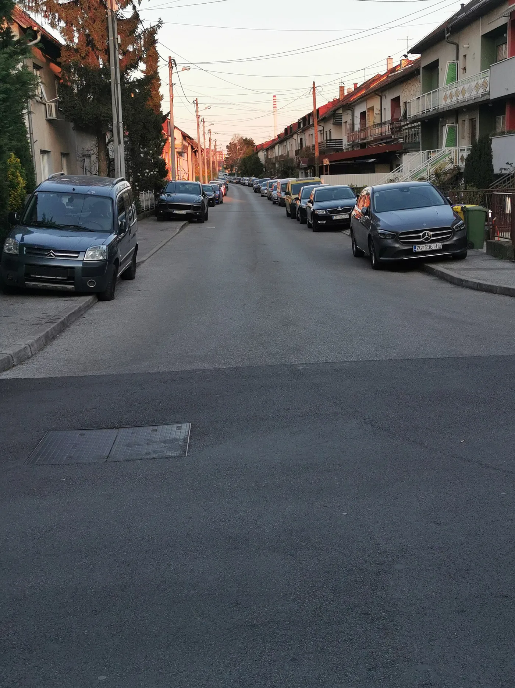

▲ 경기 안양 흥안대로. 횡단보도는 주민신고제 6대 금지구역 중 하나이고, 도로 우측처럼 연석을 따라 세우는 것도 위치에 따라 단속 대상이 된다 ⓒ Sikander, Wikimedia Commons (CC BY-SA 4.0)
불법주정차 단속은 이제 공무원이 현장에 오는 것만을 뜻하지 않습니다.
주민신고제 때문입니다. 1분 이상 세워두면 지나가던 사람이 안전신문고 앱으로 신고할 수 있습니다.
대상은 6대 구역입니다. 그리고 구역마다 과태료가 다릅니다. 가장 비싼 자리는 12만 원입니다.
1. 6대 구역과 과태료
먼저 전체를 표로 보겠습니다.
| 구역 | 기준 | 승용차 | 승합차 |
|---|---|---|---|
| 소화전 주변 | 5m 이내 | 8만 원 | 9만 원 |
| 어린이보호구역 | 초등학교 정문 앞 | 12만 원 | 13만 원 |
| 버스정류소 인근 | 10m 이내 | 4만 원 | 5만 원 |
| 교차로 모퉁이 | 5m 이내 | 4만 원 | 5만 원 |
| 횡단보도·정지선 | 해당 위치 | 4만 원 | 5만 원 |
| 인도(보도) | 해당 위치 | 4만 원 | 5만 원 |
인도(보도)는 비교적 나중에 추가된 구역입니다. "잠깐 바퀴만 올려놨다"가 통하지 않는다는 뜻입니다.
기준 거리도 짚어둘 필요가 있습니다. 소화전과 교차로 모퉁이는 5m, 버스정류소는 10m입니다. 5m는 승용차 한 대 길이보다 짧습니다. 체감보다 가깝습니다.
2. 왜 소화전과 스쿨존만 비싼가
같은 불법주정차인데 4만 원과 12만 원으로 세 배 차이가 납니다. 기준은 위반이 만드는 위험의 크기입니다.
소화전(8만 원)은 화재 대응 시간과 직결됩니다. 소방차가 도착해도 소화전 앞에 차가 있으면 호스 연결이 늦어집니다. 화재 초기 몇 분이 피해 규모를 가릅니다.
어린이보호구역(12만 원)은 시야 차단 문제입니다. 주차된 차 사이에서 아이가 갑자기 나오면 운전자는 대응할 시간이 없습니다. 어린이 교통사고가 도로를 건너다 발생하는 비중이 높은 이유이기도 합니다.
나머지 구역이 4만 원인 것은 통행 방해 성격이 상대적으로 크기 때문입니다. 위험도가 낮다는 뜻은 아닙니다.

▲ 횡단보도 주변 주차는 보행자와 운전자 양쪽의 시야를 동시에 가린다 ⓒ AhmedAlElq, Wikimedia Commons (CC BY-SA 4.0)
3. 주민신고제가 일반 단속과 다른 점
주민신고제의 핵심은 절차가 짧다는 것입니다.
일반적인 주정차 단속은 단속 차량이나 공무원이 현장에 있어야 합니다. 계도 방송이나 이동 요청이 먼저 이뤄지는 경우도 있습니다.
주민신고제는 그 단계가 없습니다. 시민이 요건을 갖춰 신고하면 지자체 확인을 거쳐 과태료가 부과됩니다.
"잠깐 세웠다"는 항변이 통하기 어려운 이유가 여기 있습니다. 기준이 1분이기 때문입니다. 비상등을 켜두는 것도 면책 사유가 되지 않습니다.
다만 지자체별로 운영 세부는 조금씩 다릅니다. 신고 가능 시간대나 특정 구역 추가 운영 여부가 지역에 따라 갈립니다. 정확한 내용은 거주 지자체 공지를 확인하는 편이 안전합니다.
4. 신고가 성립하는 사진의 조건
신고는 안전신문고 앱으로 합니다. 다만 사진을 아무렇게나 찍는다고 접수되지는 않습니다.
- 같은 위치에서 1분 이상 간격을 두고 사진 2장 — 차가 계속 그 자리에 있었다는 증명이다
- 차량번호가 식별 가능해야 한다
- 위반 장소를 알 수 있는 배경이 함께 담겨야 한다 — 횡단보도, 안전표지, 소화전 등
1분 간격이라는 요건이 있는 이유는 명확합니다. 정차와 주차를 구분하기 위해서입니다. 사람을 내려주려 잠시 멈춘 것까지 처벌하지는 않겠다는 취지입니다.
반대로 말하면, 1분을 넘기는 순간 그 구분이 사라집니다.

▲ 연석을 따라 세운 차량들. 위치에 따라 인도 침범이나 교차로 모퉁이 5m 이내에 해당할 수 있다 ⓒ Mnalis, Wikimedia Commons (CC BY-SA 3.0)
5. 신고당하지 않으려면
현실적으로 가장 자주 걸리는 상황을 정리하면 이렇습니다.
- 편의점·학원 앞 잠깐 정차 — 대부분 어린이보호구역이거나 횡단보도 근처다. 가장 비싼 자리에 세우는 셈이다.
- 소화전 확인 안 함 — 소화전은 인도 안쪽에 있어 운전석에서 잘 보이지 않는다. 내리기 전에 좌우 5m를 살펴야 한다.
- 교차로 모퉁이 — "코너를 막지는 않았다"고 생각하기 쉽지만 기준은 모퉁이로부터 5m다.
- 버스정류소 표지판만 피함 — 기준은 표지판이 아니라 정류소로부터 10m다.
- 바퀴 한쪽만 인도에 올림 — 인도는 일부 침범도 대상이다.
과태료는 차주에게 부과됩니다. 가족이 몰았든 대리운전이었든 부과 대상은 등록 명의자입니다.
주정차와 함께 자주 문제가 되는 자동차 관련 과태료는 별도로 정리해둔 기사가 있습니다.

▲ 주민신고제는 단속 장비나 공무원 없이도 과태료 부과로 이어진다
6. 정리
불법주정차 주민신고제 대상은 소화전 5m, 교차로 모퉁이 5m, 버스정류소 10m, 횡단보도, 어린이보호구역, 인도 6대 구역입니다.
승용차 기준 과태료는 대부분 4만 원이지만 소화전은 8만 원, 어린이보호구역은 12만 원입니다. 승합차는 각각 1만 원씩 높습니다.
신고는 안전신문고 앱으로 하며, 1분 이상 주정차 상태에서 같은 위치에서 1분 이상 간격을 둔 사진 2장이 필요합니다. 계도 절차 없이 곧바로 과태료가 부과되는 구조입니다.